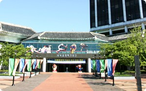

평화의성지 올팍

-
- 세계평화의문
-
서울특별시 송파구 방이동에 위치한 올림픽공원 내 평화의광장에 건립된 '세계평화의문'은 3만 3600㎡(폭 80m, 길이 약 420m)의 대지면적에 세워진 철골·철근 콘크리트 구조물로서 최고 높이 24m, 폭(전·후) 37m, 전면 길이 62m(날개 정면폭) 규모이며 아름답고 장중한 외양을 지녔다. 상징조형물의 면적은 지하 1층이 248㎡, 데크층 289㎡ 등 총 927㎡였다.
문의 개념을 최대한으로 살리면서 전통건축과 현대건축의 자연스런 만남을 시도한 '세계평화의문'은 한국 전통건축의 둥근 곡선을 활용, 비약과 상승의 이미지를 강조하였다. 조형물의 천장부분인 날개 하단에는 서양화가 백금남씨(성균관대학교 교수)가 한국의 전통양식인 단청을 주조로 하여 사신도인 청룡·주작·백호·현무를 1,531㎡의 양면에 단층으로 그려넣었다. 세계평화의문 앞쪽 좌우로는 조각가 이승택 씨가 만든 '열주탈'이 각 30개씩 늘어서서 들어서는 사람들을 맞이하며, 청동으로 구성된 탈은 직경이 60cm, 높이 85cm이며 석재로 제작된 열주는 직경 60cm, 높이 3m이다.
-
- 평화의광장
-
세계평화의문 앞쪽에는 약 28,000㎡ 규모의 '평화의광장'이 넓게 펼쳐져 있는데 화강석으로 조성된 광장에는 고구려의 고분벽화에 나오는 수렵도의 무늬가 새겨져 있다. 광장 주변에는 세계평화의문, 기록조형물, 조형물, 호수, 편의시설 등이 있어 청소년과 시민들의 현장교육과 사회체육, 문화예술공간으로 다양하게 활용되고 있는 공원의 중심적 공간이다. 열주는 직경 60cm, 높이 3m이다.
-
- 서울평화 선언
-
모든 사람은 이념, 인종 및 종교의 차이를 초월하여 전쟁과 폭력의 위협으로 부터 벗어나 평화롭게 살기를 갈망한다. 이는 곧 인류 공동의 염원인 행복의 권리를 향유할 수 있는 길이기 때문이다. 따라서 대한민국 수도 서울에서 개최되는 제24회 하계올림픽대회가 명실공히 평화의 제전이 되게 하기 위하여 1988년 9월 17일부터 10월 2일까지는 무기와 증오심을 버리고, 폭력과 테러의 위협이 없는 평화의 기간이 되어야 하며 이를 계기로 세계평화가 영원히 뿌리를 내리게 하여야 한다. 이것은 오늘을 살고 있는 세계의 모든 사람에게 부과된 인류 역사의 소명인 것이다.
이에 우리는 이미 각자가 서명한 바 있는 평화호소문의 이념을 받들어 1988년 9월 12일 서울올림픽대회에서 이를 서울평화선언으로 채택한다.
-
- 세계의 돌 (만국석)
-
조직위원회는 1988년 1월 IOC로부터 올림픽운동 조형물 건립 제의를 받고 합의에 도달하여 동년 2월 조직위측은 최만린 교수를, IOC측은 에스파냐의 조셉 M. 수비라치를 작가로 선정하였다. 동년 10월 양측은 각각 25만달러를 공동 출연하여 올림픽공원내 세계평화의문 후면 광장에 높이 6.5m, 가로 3.2m의 본체와 그 주위를 높이 2.5m, 너비 2.4m 5개의 구체를 만들어, '세계의 돌 (만국석)'을 기증한 각국의 국가명을 각인, 기념하였다. 1989년 8월 30일 건립 취지문을 새긴 석판을 설치 완료하고 9월 17일 올림픽 1주년에 제막식을 가졌다. 조형물의 기단은 IOC와 각 NOC 및 선수들이 기증한 자연석 4,000여개의 만국석을 가공, 모자이크 형식으로 조성하여 기증자의 뜻을 예술작품으로 승화시켰다.
-
- 올림픽회관
- 이 건물은 제10회 아시아경기대회와 제 24회 올림픽대회의 준비 및 운영을 지휘한 양대회 조직위원회 본부로서 대회운영요원의 땀과 보람이 담긴 곳이다.
-
- 연면적 : 17,305㎡ (지하2층, 지상15층)
- 공사기간 : 1984.8. ~ 1986.5.
- 특징 : 이 건물의 아랫 부분은 한옥의 전통미를 살리고, 윗부분은 현대적 감각을 부각시켰다.
- 건축비 : 108억원 ('88 서울올림픽대회 제일한국인후원회 기부)
 -
- 평화의 성화
-
세계평화의문 중앙에 설치된 평화의 성화는 서울올림픽 평화대회 추진위원회에서 제작 발의 및 추진을 진행하였고 서울특별시가 제작비를 지원, 1988년 8월 31일 조형물공사를 완료하였다. 형태의 외곽은 원형내부 8각형의 화강석 조형물이며, 규모는 직경 4.1m, 높이 0.75m 이고 연료는 도시가스이다. 설계는 (주)환경그룹 환경정책연구원 원장 곽영훈 씨가 담당하였다.
평화의 성화 조형물 기단에는 '서울평화선언'과 평화의 성화 설치 취지 및 점화 경위가 한국어, 영어, 프랑스어의 3개국어로 새겨져 있다. 1988년 9월 12일 조직위원회의 지원으로 강화도 마니산 참성단에서 받아온 불을 사마란치 IOC 위원장과 함석헌 평화대회 추진위원장이 공동으로 점화하였으며, 동일 이 성스러운 불은 평화대회 추진위원회로부터 조직위에 기증되었다.
-
- 기록 조형물 건립
-
조직위원회는 기록조형물에 수록하여야 할 내용의 범위를 결정하기 위하여 1988년 2월 기록 편찬 소위원회와 조형 심의 소위원회를 각각 구성하여 1차 회의를 가졌고 3월에는 기록 편찬 및 조형 심의 합동회의를 개최, 올림픽 유치 및 성과 문안, 수록자료에 관한 문제 등을 토의하고, 아울러 예술성과 글자체도 구체적으로 토의 확정하였다.
1989년 8월 15일 각인작업을 완료하고, 8월 25일 최종 마무리, 8월 30일에 완공하였다. 수록내용은 시인 조병화 씨의 헌시 '오, 위대한 조국이여'를 비롯하여 올림픽대회 유치 및 대회운영 경위와 의의 등 사실적 기록과 유공자, 성금지원 인사 및 단체 등으로 석벽의 좌측과 우측에 균형있게 배열하였다.조직위원회는 1988년 3월 세계현대미술제 국제 운영위원인 글리보타 위원과 벽화 제작 계약을 체결하고, 동년 9월 프랑스 작가 장 메사지에와 미국 작가 엘리자베스 프러츠하임의 벽화를 수변무대 좌우 2개소에 설치 완료하였다. 철과 에나멜을 사용한 이 벽화는 가로 67.5m, 세로 2.2m의 규모이다.